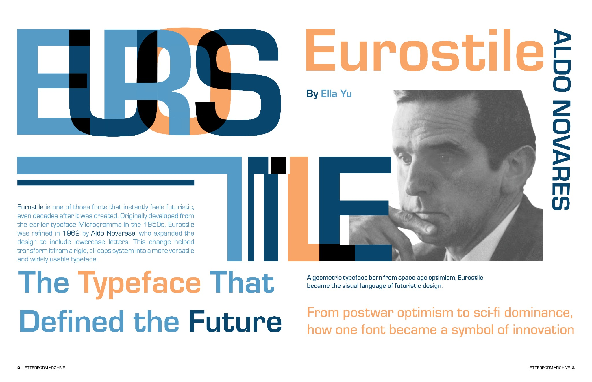
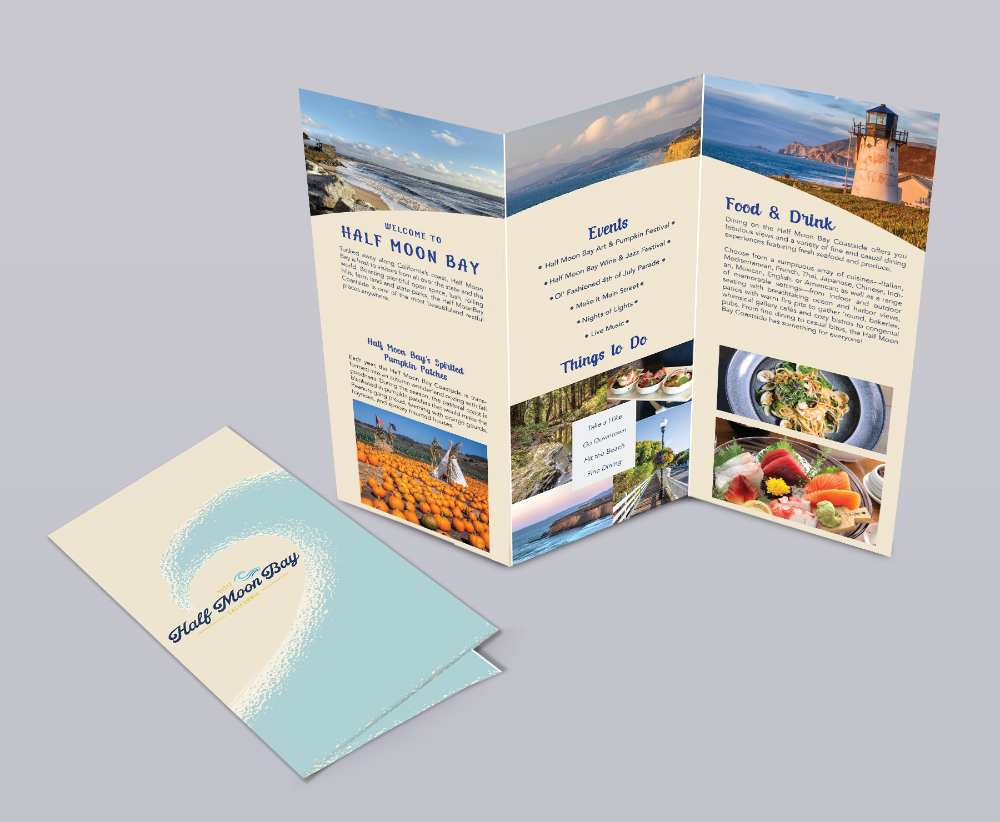

Selected creative practice
The work.
A selection of illustration, typographic design, publication layouts, motion, and experimental new media. Each project is part of how I learn to communicate through images.
01 / Images & meaning
Digital illustration


02 / Printed & designed
Layout & typography

Eurostile Feature
A two-sided editorial exploration of the Eurostile typeface.

Martina Flor
An expressive publication spread about lettering artist Martina Flor.

Half Moon Bay
Photography and typographic hierarchy guide readers through a destination.

YOASOBI Record Cover
A visual response to music expressed through repetition and geometry.

History of Type
Type history arranged through contrast, sequence, and editorial rhythm.
Student Voice Concert
A warm, illustrated poster for a performance of Mariachi and Zarzuela.
03 / Experiments on screen
ART 74 / New media


04 / Design in time